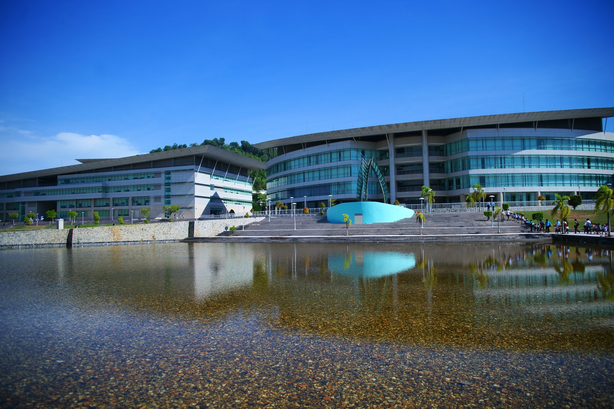
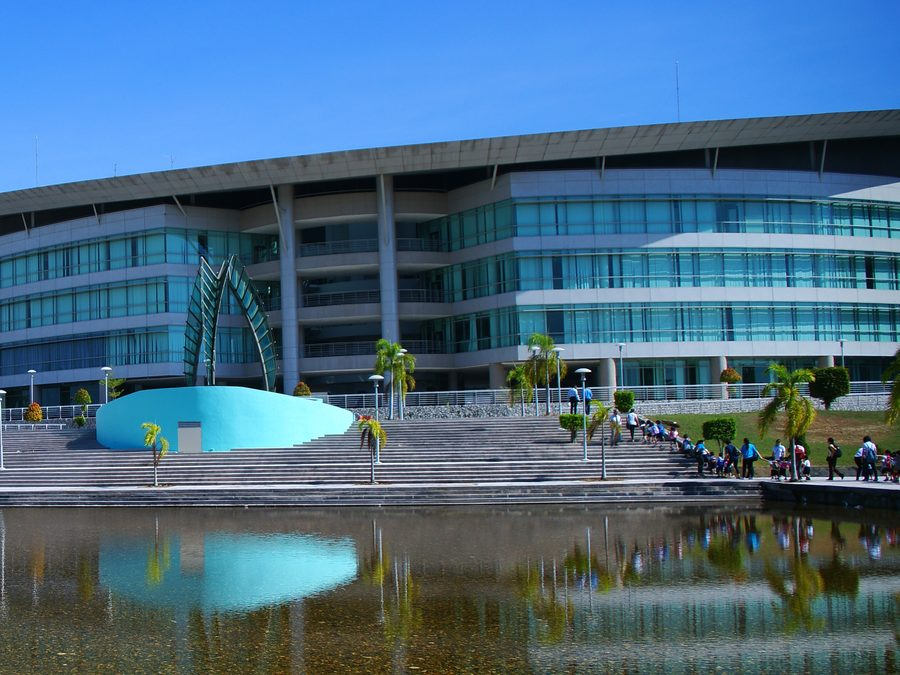
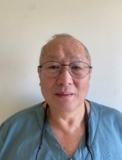
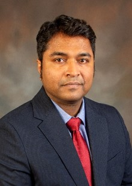
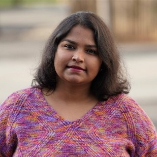

01
Environmental
Green dentistry, eco-friendly materials, waste management, energy-efficient dental units and digital workflow sustainability.


The 2nd International Conference on Environment, Social & Governance and Sustainability in Dentistry — where clinical excellence meets responsible practice.
ICESGSD 2026 is an online international event hosted by the Faculty of Dentistry, AIMST University, Malaysia, in collaboration with Sri Venkateswara Dental College & Hospital (SVDCH) and Sri Balaji Vidyapeeth (SBV).
The conference brings together invited international and national speakers, panel discussions on sustainability and ethics, student competitions, and interactive Q&A sessions designed to turn conversation into collaboration.
It is a forward-looking platform — not just about dentistry, but about shaping a sustainable future for oral healthcare across the ASEAN region and beyond.
“ESG is already part of everyday practice. ICESGSD 2026 makes it visible, measurable and shareable.”


The program is organised around the three ESG pillars, each translated into practical questions for dental education, clinical practice and institutional governance.
Green dentistry, eco-friendly materials, waste management, energy-efficient dental units and digital workflow sustainability.
Ethical patient care, oral health equity, community engagement, access to dental services, diversity and inclusion.

Institutional sustainability policies, dental data ethics, transparency and compliance, accreditation standards.

Five outcomes guide the program, the speakers we invite and the conversations we host.
Keynotes, plenaries, invited talks, a panel discussion and student presentation tracks — all delivered online across two focused days.
Clinicians, educators and researchers from Malaysia, India, Canada, the Philippines and beyond.

Implantologist & biomedical engineering (biomaterials)
International expert in dental & maxillofacial implants

Diplomate, American Board of Endodontics · Indiana University, USA

Research consultant, BC Centre for Disease Control, Canada
Dean of Collaboration & Networking, SIMATS, India

Professor, Sri Venkateswara Dental College, India
Certificates are awarded for all accepted presentations. CPD points are awaited for confirmation.
Presented to an outstanding individual whose exceptional contribution has significantly advanced sustainable dentistry, healthcare innovation, education or ESG implementation.
Recognises the highest-quality oral presentation demonstrating scientific excellence, originality, clinical relevance and effective communication.
Awarded to the most informative, visually engaging and scientifically rigorous poster presentation.
Honours an outstanding clinical case demonstrating excellence in diagnosis, treatment planning, innovation and patient-centred care.
Presented to an early-career researcher who demonstrates exceptional research potential, innovation and scientific contribution.
Recognises innovative technologies, materials, products or clinical approaches that promote environmental sustainability in dentistry and healthcare.
Presented to an individual or team whose work has made a measurable contribution towards Environmental, Social and Governance practices in healthcare.
Celebrates compelling photographs that creatively capture sustainability, environmental stewardship and community engagement in oral healthcare.
Recognises the most creative short video promoting sustainable dentistry, ESG awareness and positive healthcare practices through digital storytelling.
Selected through delegate voting, this award recognises the innovation, presentation or project that inspired the greatest interest and impact among conference participants.
Early-bird rates are open until 15 September 2026, with special rates for students, AIMST alumni and staff. Group discounts are available on request.
26–27 September 2026 · Online